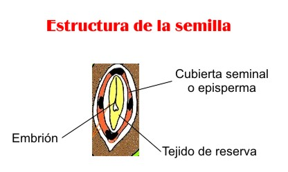
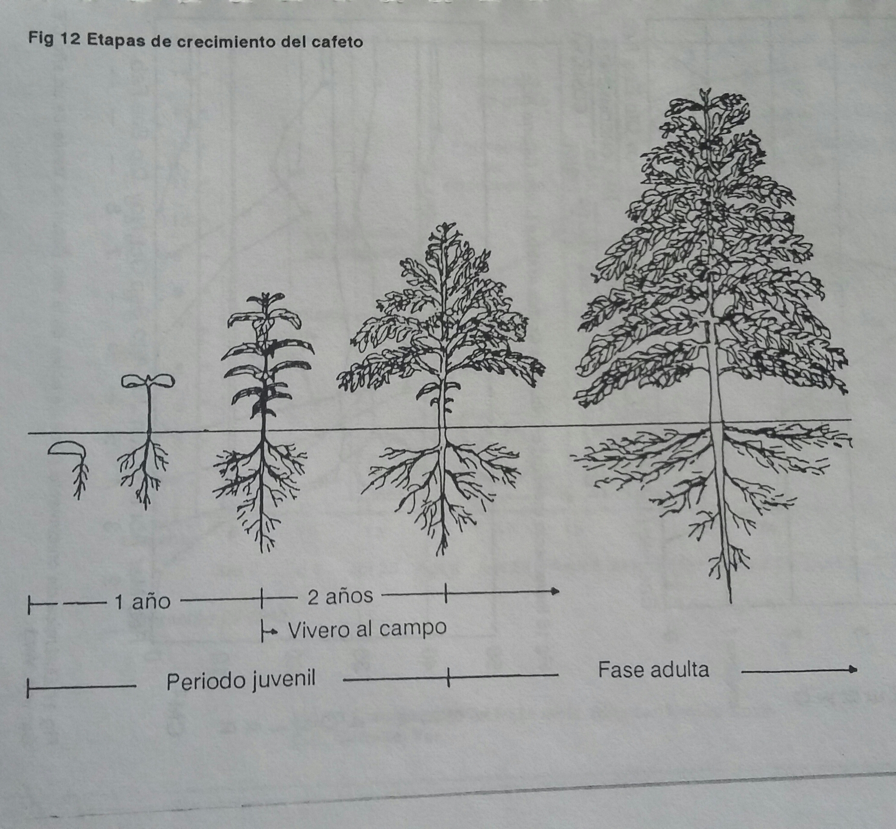
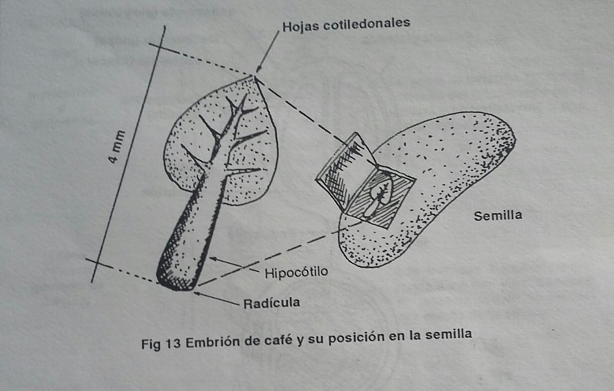
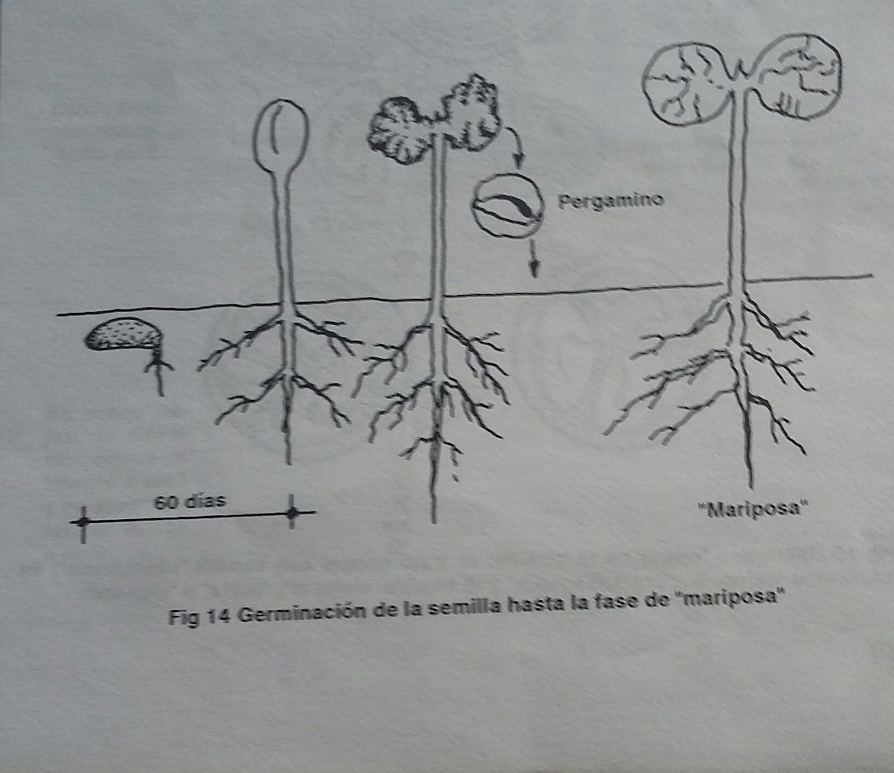
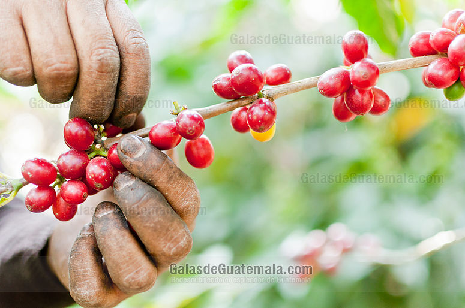
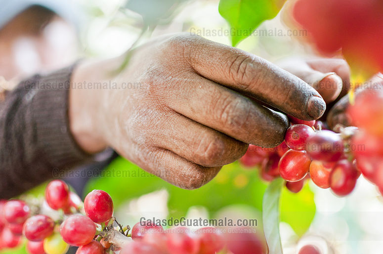
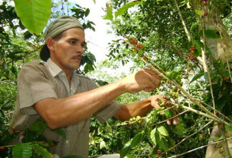
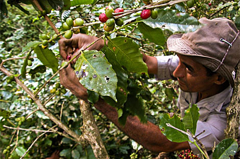
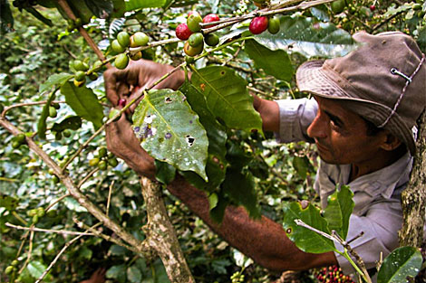
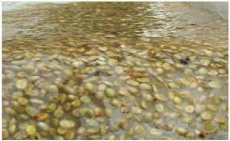

Capítulo III
Esta práctica tiene como finalidad escoger el material más adecuado para su propagación.Al decir material más adecuado se refiere al hecho de que para cada variedad deben tomarse las plantas más representativas y de ellas las cerezas que, dentro de límites medios, denoten mayor tamaño, buen grado de maduración, buena conformación, exentas del ataque deplagas o enfermedades; que estén, sencillamente, libres de accidente alguno.Normalmente, este material se encuentra en plantas cuya edad esté comprendida entre 7 y 20 años.Esto está condicionado por el sistema de cultivo a que esté sujeta la planta.Se procurá que las plantas no sean demasiado jóvenes ni demasiadoviejas.Dentro de una misma planta, el material que se alude, normalmente se encuentra en las ramas centrales del cafeto, y sobre todo en las que tiene mejor iluminación y por consiguiente, un desarrollo normal.Para seleccionar las plantas que proporcionarán la semilla es conveniente hacer un recorrido amplio por los cafetales de la región, después de la cosecha y precisamente en el periodo de secas.Estopermitirá juzgar la abundancia en que ocurrió la producción de cosecha y a la vez, apreciar en la planta los efetos causados por la acción de la falta de lluvia.
La segunda observación deberá efectuarse en el periodo de floración, poniendo mucha atención en que ésta acontezca en la misma época que en el resto de la población.La tercera observación se hará en el sentido de que con una humedad normal en el medio, el aborto de flores o caída prematura no sea muy abundante.Esto se podrá constatar mediante la observación directa al pie de los cafetos.
Posteriormente,se eguirá observando si no caen con cierta abundancia los pequeños frutos en desarrollo, lo que normalmente puede verse inspeccionado el área que abarca la planta por seleccionar; en este caso se procurará definir las causas, que posiblemente puedan ser:exceso de humedad,escasez de agua en el suelo, escasez de nutrientes,accidentes mecánicos, o bien el caso menos común, anormalidades de orden genético.Al alcanzar el estado de madurez en el fruto, se observará la persistencia del mismo en las ramas, en la inteligencia de que dich observación se hará más tarde cuando el fruto alacance color cereza ligeramente obscuro.LLegada la época de maduración,se observará el ciclo vegetativo del fruto, con la finalidad de descartar o cuando menos conocer el material precoz o tardió en su maduración, y poder elegir el material que convenga tomar.
Cada año y en cada "corte" se tomarán muestras representativas del material con la finalidad de determinar el peso específico de la cereza, número de cerezas por litro, peo específico de la semilla lavada y apenas escurrida, número de granos que forma un litro de semilla en estas condiciones, porcentaje de granos triangulares, gigantes,caracol y planchuela.Esta información permitirá, junto con los datos primeramente indicados,hacer un preeselección de los cafetos para escoger las plantas más apreciables.Finalmente, cada planta escogida deberá ser maracada por medio de una lámina de aluminio, de cinco centímetros de ancho por quince de largo, en donde se estampará el número de registro de dicha planta.A la vez, se hará una ligera encalada del tronco de medio metro a partir del suelo, con la finalidad de que rápidamente se localicen las plantas,la selección de semilla comprende prácticas que acontinuación se indican:
   CORTE DE CEREZA
Con este nombre se designa al hecho de seleccionar los frutos que, cortados de las ramas, serivirán para la obteción de la semilla.El rendimiento se especificará en litros de cereza.
   

DESPULPADO DE CEREZA
Consiste esta operación en separar las envolturas del fruto de los granos que se encuentran en su interior.Esta labor puede afectuarse prensando los granos entre las manos cuando se trata de pequeñas cantidades, o bien mediante el uso de una despulpadora debidamente calibrada.El rendimiento se consignará en litros de cereza.
LAVADO DE SEMILLA
Esta operación consiste en mezclar con el agua la masa que previamente se ha puesto a fermentar con la finalidad de seperar los granos del mucílago.El rendimiento se consignarán en litros de semilla.
SECADO DE SEMILLA
Esta operación consiste en extender la semilla sobre una superficie adecuada, ya sea madera,(zarandas) de cemento o ladrillo, y remover periódicamente con la finalidad de que los granos pierdan humedad uniformemente.El tiempo que esttarán los granos en el secado dependerá de la altura de la localidad; sin embargo, la semilla deberá permanecer el tiempo suficiente para que pierda el agua del lavado.En caso de que no se use de inmediato, una vez"seca", la semilla deberá almacenarse en capasa delgadas en un lugar fresco y bien ventilado revisando periódicamente la masa con la finalidad de eliminar cualquier brote de hongos que pudieran aparacer.Para ello pueden bastar una buena ventilada, y una aplicación con algún fungicida a base de cobre.Para que esta desinfección ocurra en forma adecuada, s ehará en un recipiente hermético en donde se pone en contacato el fungicida y el grano, y mediante movientos violentos que s e le impriman al bote durante un tiepo adecuado, se logrará que a cada grano lo cubra una delgada capa protectora.El secado de la semilla e s de vital importancia, ya que de ello depende en mucho la longevidad de la misma.Todo el anterior proceso da el material ya seleccionado para establecer los lotes de multiplicación de semillas en nuestro campos expermentales o en predios de productores, para entregar a el cafeticultor, pecetillas sanas, homogéneas y de producción.
ALMACENAMIENTO DE SEMILLAEl almacén tendrá las características siguientes:
a)Paredes aislantes a la temperatura del medio ambiente.La temperatura reinante de los almacenes debe oscilar entre 20 y 25°C
b) Los almacenes requieren de una humedad relativa de 60%
c) El café no debe tener contacto directo con el piso de almacen, sino que los costales se depositarán sobre tarimas de madera a 15cm del suelo.
d) El café se envasará en sacos de henequén de 150 litros de capacidad para facilitar los conteos de existencias.
e) No debe existir ningún otro producto(sobre todo insecticidas o fungicidas) que contaminen a la semilla
SELECCION DE SEMILLAEsta operación consiste en retirar del total de granos todos aquellos quebrados, manchados, gigantes, triangulares, caracoles etc..., es decir, todos aquellos que se alejen d ela forma y aspecto normal de una semilla sana.Esta operación normalmente es costosa pero si se ha hecho una buena selección de las plantas, se obtiene buena cereza y buena semilla.En caso de que esta operación se efectúe, el rendimiento se consignará en litros.
DESINFECCION DE SEMILLAMediante este términose conoce la práctica de preservar la semilla del ataque de hongos, principalmente cuando va a sufrir largo almacenaje.La desinfección puede hacerse valiéndose de un recipiente que pueda cerrarse herméticamente; en él se colocará la semilla a la que previamente se le ha adicionado desinfectante.Sobre el particular, es conveniente indicar que, a medida que la dosificación se aumenta se corre el riesgo de causar en los tegidos de la semilla serios endurecimientos que entorpecen la normal germinación de las mismas, anormalidad que se manifiesta por una larga persistencia del edocarpio y perisperma en los soldaditos, retrasando el crecimiento de las hojas cotiledonales.EL rendimiento se consignará en litros de semilla.
VIABILIDAD DE LA SEMILLAIndica la condición de que la semilla esté viva o muerta.Esta se expresa generalmente en porcentages: y está correlacionada con la germinación, ya que si una semilla tiene baja viabilidad,tendrá un bajo o nulo porcentaje d egerminación.El contenido de humedad de la semilla debe ser 20-25% para que tenga alto porcentaje de germinación y aprovechamiento del 95 al 100% de plantas.Para acreditar la buena germinación de la semilla se mide su poder germinativo.Las pruebas tradicionales son lentas, por lo cual se recomienda la sal de tetrazolio.Este método se basa en que dicha sal, al reaccionar con el tejido vivo, desarrolla una coloración rojiza magnitud e intensidad determinan el grado de viabilidd.La prueba comprende lo siguiente:
400 semillas distribuidas en cuantro repeticiones, permiten un 90% de confiabilidad.Los granos se despergaminan y se remojan durante 24 horas en agua destilada.Posteriormente se cortan longitudinalmente procurando no lesionar el embrión.Las partes cortadas se sumergen en una solo solución de tetrazolio al 0.5%.Las semillas colocadas en cajas petri se introducen a una estufa la temperatura de 25-30°C durante 12 horas.
Se hace de acuerdo a la escala siguiente:
| Rojo intenso | Viable |
|---|---|
| Rosa intenso | Viable |
| Rosa pálido | No viable |
| Rosa pálido con puntos rojos | No viable |
| Rosa pálido a la mitad del grano | No viable |
| Sin coloración en el embrión | No viable |
| Días entre la obtención y la siembra de la semilla | Porcentaje de germinación |
|---|---|
| 1 | 98 |
| 30 | 95 |
| 60 | 95 |
| 20 | 90 |
| 120 | 80 |
| 150 | 50 |
| 180 | 25 |
| 360 | 7 |
Como su nombre lo indica, esta practica tiene como finalidad envasar la semilla en costales adecuados y en la cantidad apropiada para facilitar su movimiento.Lleva etiquetas colocadas por dentro y por fuera, donde eñala la variedad, en donde se obtuvo, la fecha de recolección y el porcentaje de germinación.El rendimiento se consignará en litros de semilla.
TRANSPORTE DE SEMILLAEsta operación consiste en movilizar por cualquier medio la semilla de un lugar a otro.El rendimiento se indicará en litros. y el costo de esta práctica estará sujeto, naturalmente, al medio de transporte utilizando y a la distancia recorrida.
VIGILANCIA EN CORTE DE CEREZACon esta denominación se designa al hecho de ocupar una o más personas de absoluta confianza, d er esponsabilidad y de conocimientos suficientes como para que vigilen a los mozo que directamente se encarguen de ir cortando la cereza.
COSTO DE LA CEREZACon este término se indica el hecho de adquirir en compra la cereza que servirá para la selección de la semilla.De cualquier manera, y aun en el caso de que la semilla proceda de campos particulares, deberá cargarse el valor de la cereza pra obtener en esta forma el coto d e la semilla.En esta partida deberá estra el costo de la cereza en litros.En este capítulo de selección de semilla, los gastos se cargarán de acuerdo con los términos usados, que corresponden a la vez a otras tantas cuentas, con la finalidad de que sepa la inversión hecha en cada una de las operaciones, y finalmente, conocer el valor del litro de semilla, lo que permitirá ofrecerla al agricultor siempre en las mejores condiciones de precio.